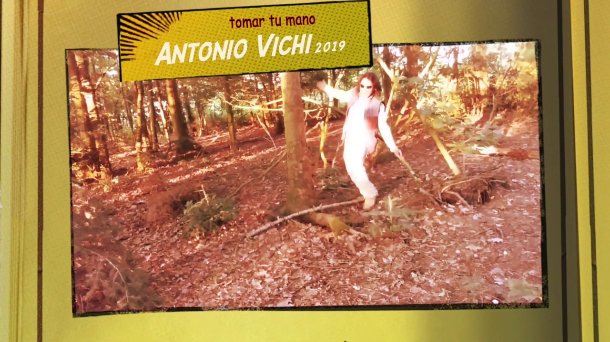
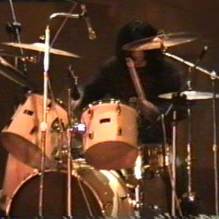
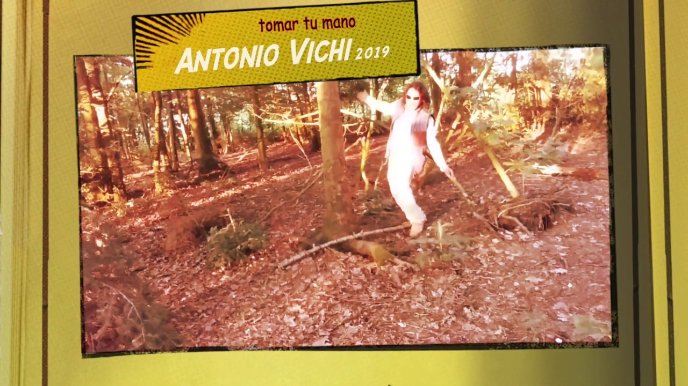
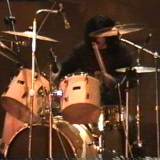
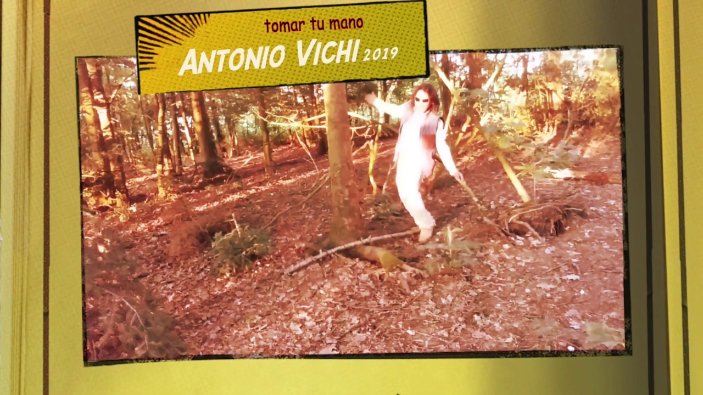
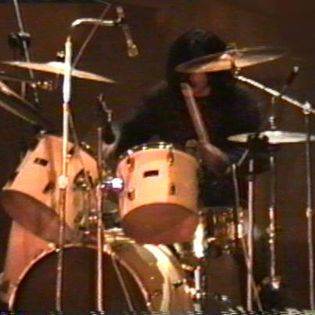
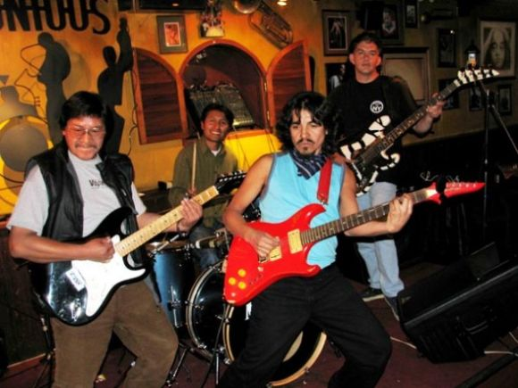

Antonio OliverA
Rocking and Running the World


Rock music has been the "medium" that Antonio used to travel to many places in the world. Thanks to rock Antonio was able to visit remote places where he always met people who love this music and although from very different cultures they always had in rock music, one thing in common, in addition to also sharing with "true fans" regardless of ages or cultures, in this way although being far away he always feels at home thanks to sharing his obsession with people from other latitudes
Rockin in London
In London I bought a beautiful black Ephifone guitar, which was on sale!! in one of the oldest music shops in the city, curiously the name of the street, which is in the center, is called Denmark Street!! and there are beautiful shops of musical instruments, in some of which are the super instruments, of course, but also many photos and souvenirs of great rock artists, in some photos I could see Jimy Hendrix trying a guitar, Jhon Lenon and many more, I really love this "Denmark street" with all these boutiques of Rock instruments.
Rock in Paris

Rocking in New York
I was several times in New York, and I always plan to return, the first time was a trip after finishing studying in Copenhagen, and they, the school, "facilitated" us a tour to the Big Apple; they where celebrated the birthday memory in honor of John Lenon in the famous Central Park!! and there we went !! It was like a throwback to the 70s with all those hipies around singing "Give peace a chance", and many more songs by Lenon and his henchmen!!


Rocking in Copenhague

In Copenhagen there are always mystical things happening and once we were around as part of a cultural boat, and we did many activities besides Rockanroll of course!!
Rocking in Mexico